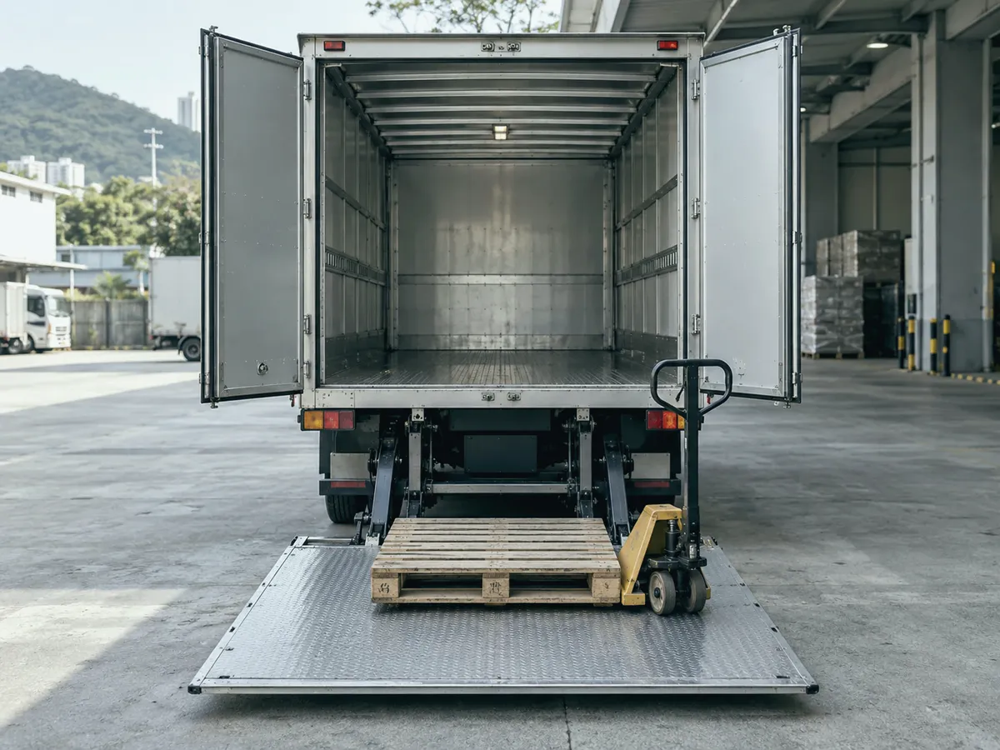
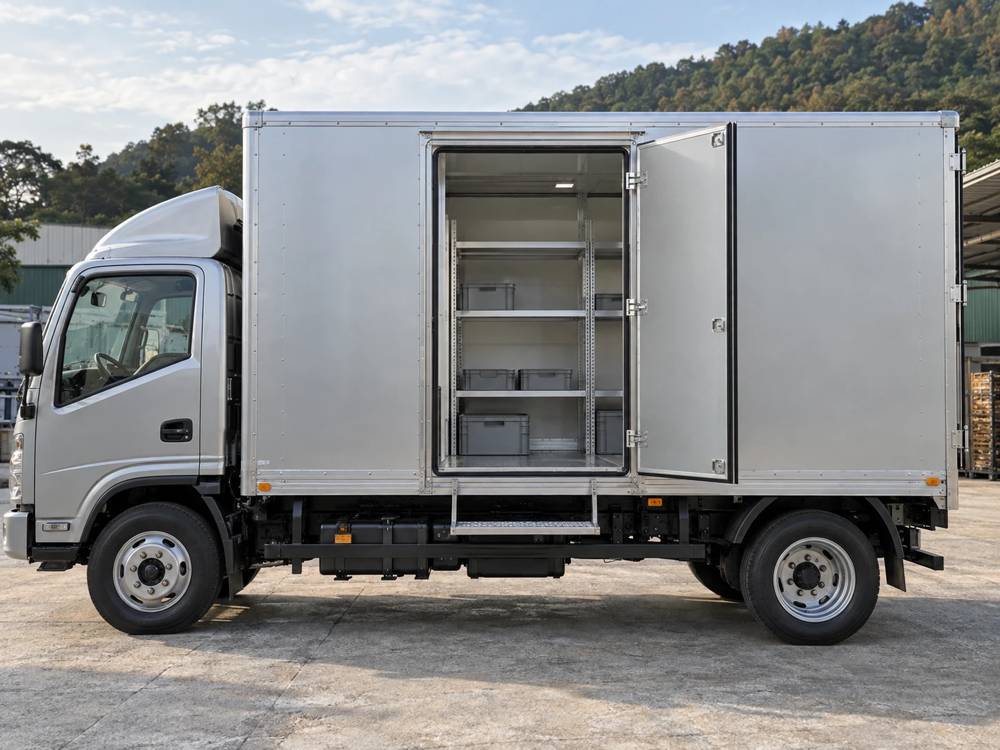
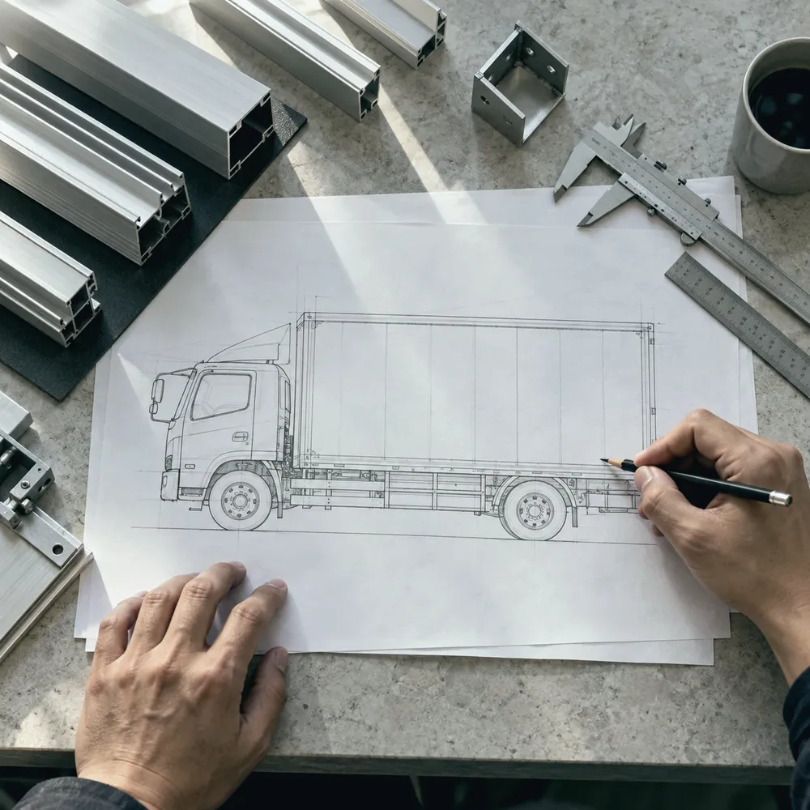
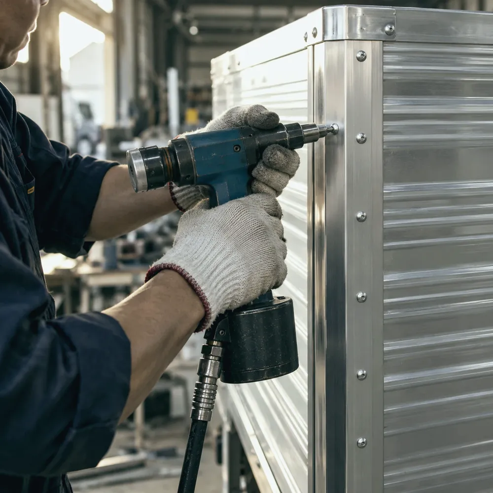
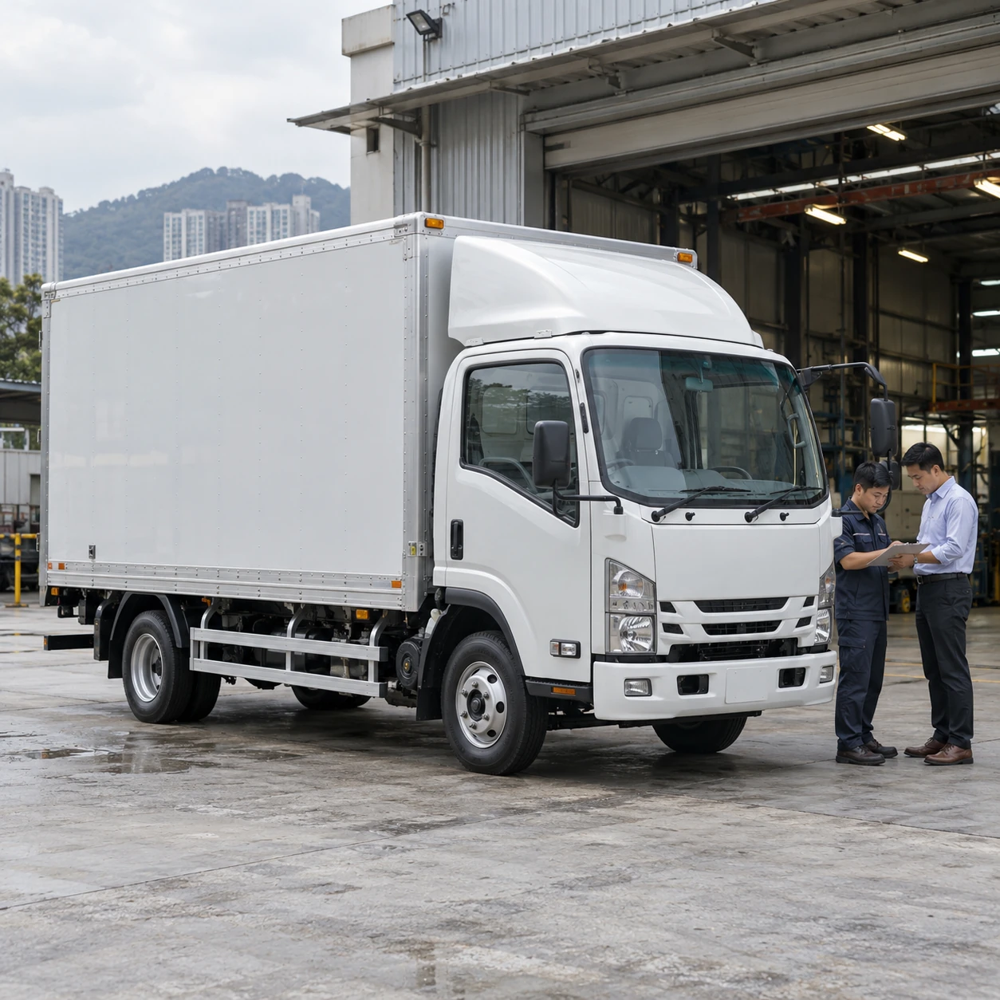

常見服務行業
物流運輸家具搬運建材五金倉庫零售機械設備
做過的車廂，
由行業看起。


車廂本體，
加上合適配置。
先決定車廂本體，再按裝卸方式加入尾板、側門或貨架。附加配置可以按需要組合，不必三選一。
車廂本體

訂製密斗
鋁質或鐵質車廂，按車架、貨物尺寸及日常用途訂造。
- 適合用途
- 需要防風防雨、可上鎖保管的一般貨物運輸。
- 可選細節
- 車廂物料、內部尺寸、開門方式、地板及內部間隔。
- 查詢前請準備
- 車款及車架長度、希望的車廂內部尺寸、主要貨物種類。
裝卸及附加配置可與車廂本體一併訂造；現有車廂亦可先查詢是否適合加裝。

升降尾板
按貨物重量、裝卸習慣與車輛條件，評估尾板配置及安裝方式。
- 適合用途
- 經常上落重貨或卡板，而裝卸點未必有月台。
- 可選細節
- 安裝位置、平台尺寸及收合方式，按車架條件評估。
- 查詢前請準備
- 車款、最重單件貨物的重量、是否使用手推拖板車。

側門及貨架
按貨物種類及取放次序安排側門開口與內部間隔。
- 適合用途
- 需要在路邊或窄位由側面取貨，或貨物需要分層存放。
- 可選細節
- 側門位置及數量、分層貨架、地板收邊。
- 查詢前請準備
- 貨物尺寸、取貨次序；如屬改裝，請提供現有車廂相片。
由量度到交車
四個步驟，每一步都會先同你確認。
 第 1 步
第 1 步量度
了解車款、車架、貨物及裝卸方式，核對尺寸與現有條件。

第 2 步設計
討論物料、開門方向、內部配置及預算，確認報價與製作安排。

第 3 步製作
按確認方案製作、組裝及安裝配置，留意接合與收邊。

第 4 步交車
共同核對車廂及配置，確認使用方式與後續跟進。
選擇配置，帶入查詢
幾個簡單選擇，協助我們更快了解你的需要。實際報價按尺寸、物料及施工要求確認。
零件及配套
除了車廂訂造，亦可查詢
零件、包裝耗材及叉車配套。
提供車款及用途，
以便評估報價
請告訴我們車款、用途及需要。
有相片、尺寸或者初步構思，就更容易商討。
聯絡資料更新中。你可以先整理並複製查詢內容。
01 了解運輸需要02 確認車輛條件03 商討訂造方案
常見問題
查詢報價前，要準備甚麼資料？
提供車款、車廂尺寸、用途及所需配置，有現況照片會更方便了解。未有完整資料亦可以先整理你的需要。
舊車廂可以維修或改裝嗎？
可以先查詢。是否適合維修、加門、加貨架或更換部件，需要按現有結構及實際狀況評估。
可以加裝升降尾板嗎？
需先核對車架、載重、安裝空間及用途，再確認合適的尾板配置。
訂造費用及交車時間如何確認？
費用及製作時間視乎尺寸、物料、配置與排期。確認方案時，應一併確認報價、交付安排及相關條款。
圖中配置都可以直接訂造嗎？
圖片用作配置及設計概念參考，並非固定產品規格。實際可行方案以車輛條件及雙方確認的設計為準。